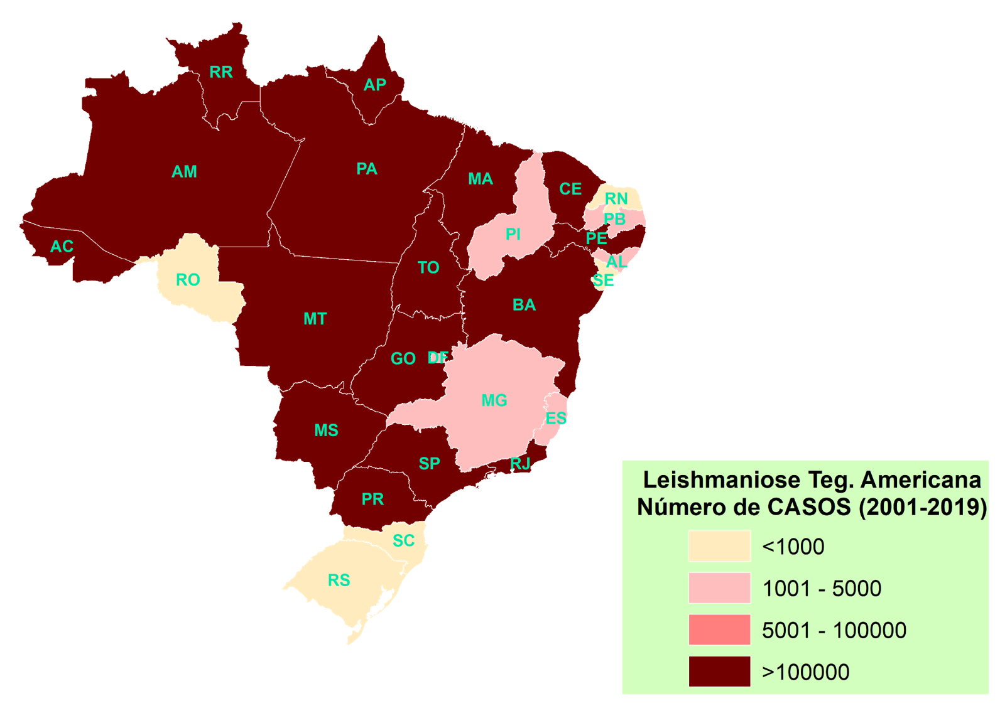
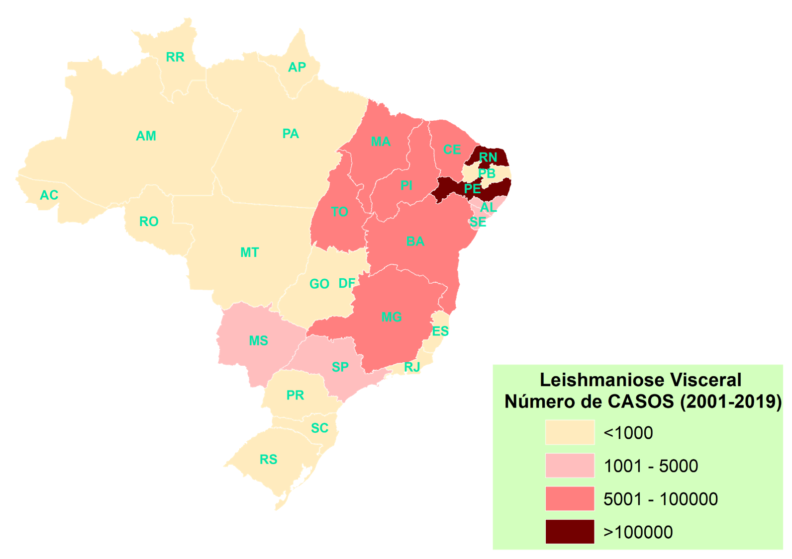

Voltar
RADAR LEISHMANIOSE
Sobre a doença
A leishmaniose é uma doença de abrangência tropical causada por um protozoário parasita intracelular
do gênero Leishmania.
É uma infecção transmitida por vetores femininos, sendo que a taxa de ocorrência
da doença é comum em populações pobres de países tropicais e subtropicais.
O ciclo de vida da Leishmania é simples e o parasita se propaga em duas formas morfológicas diferentes,
a leishmaniose visceral e a tegumentar (DAYAKAR et al., 2019).
Cerca de 50.000 a 90.000 de novos casos a cada ano de leishmaniose visceral no mundo, sendo que mais de 90% dos novos casos ocorreram no Brasil, Etiópia, Índia, Quênia, Somália e Sudão. Já a incidência global de leishmaniose tegumentar é estimada de 0,6 milhões a 1 milhão de novos casos todos os anos, sendo que 95% dos casos ocorrem nas Américas, Mediterrâneo, Oriente Médio e Ásia Central (SOOSARAEI et al., 2018).
A forma de transmissão se dá pelo estágio promastigota do parasita nos fluidos corporais do inseto e entra no hospedeiro mamífero quando o mosquito palha se alimenta de sangue (DAYAKAR et al., 2019). Segundo Biswas et al. (2017) devido a gravidade da doença em diferentes escalas, exige-se a implementação de estratégias de intervenção que sejam eficientes e que auxiliem na limitação da propagação da infecção entre as populações humanas. Dentre a implementação de estratégias existem pesquisas sobre o controle do vetor, controle da população do vetor e controle do hospedeiro. No caso de controle de vetores animais, os mesmos podem ser eliminados por eutanásia, vacinas e/ou colares com inseticida. Outra possibilidade são as populações de vetores flebotomíneos controlados por pulverização de inseticidas e a utilização de mosquiteiros tratados. Já em relação ao hospedeiro humano, se tem a existência de medicamentos para tratamento da infecção, que é um programa de larga escala implementado pela Organização Mundial de Saúde (SOOSARAEI et al., 2018)
Variabilidade Espacial dos casos de Leishmaniose Tegumentar e Viceral no Brasil
(2001-2001)

Fonte: DataSUS (2020)

Fonte: DataSUS (2020)